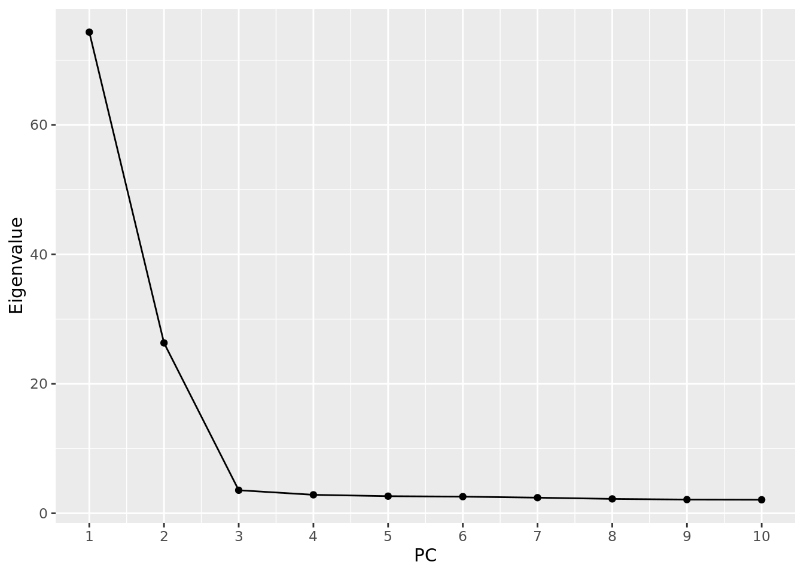
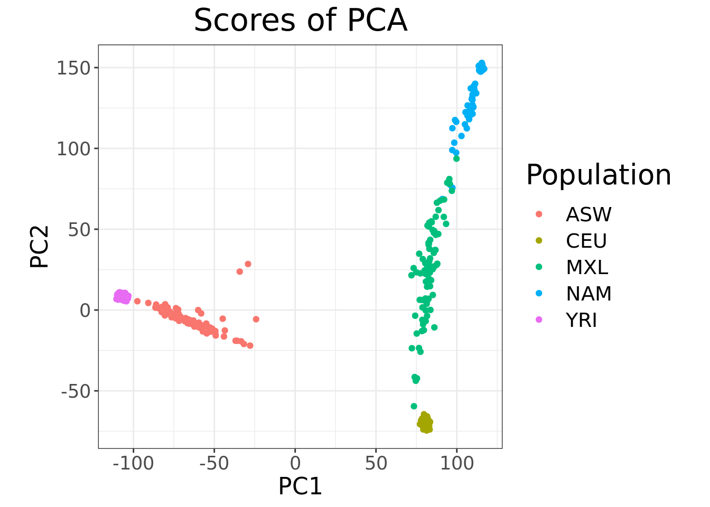
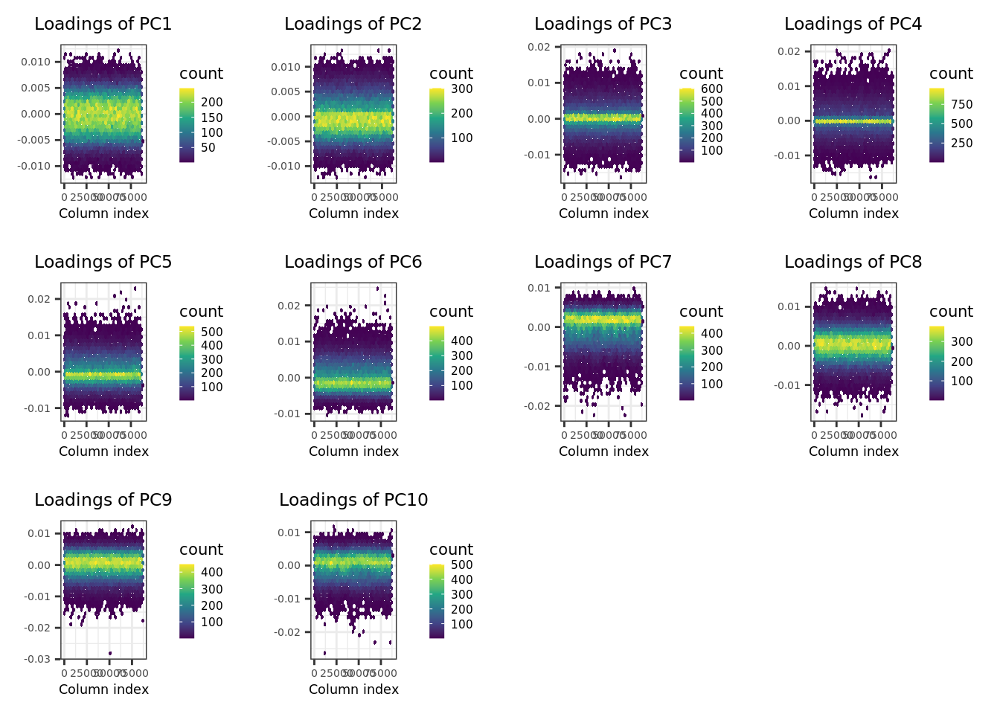
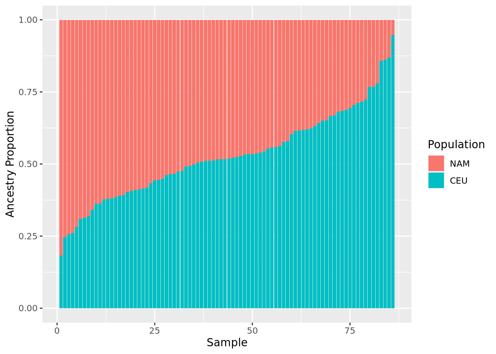

Last updated: 2022-07-25
Checks: 7 0
Knit directory: SISG2022_Association_Mapping/
This reproducible R Markdown analysis was created with workflowr (version 1.7.0). The Checks tab describes the reproducibility checks that were applied when the results were created. The Past versions tab lists the development history.
Great! Since the R Markdown file has been committed to the Git repository, you know the exact version of the code that produced these results.
Great job! The global environment was empty. Objects defined in the global environment can affect the analysis in your R Markdown file in unknown ways. For reproduciblity it’s best to always run the code in an empty environment.
The command set.seed(20220530) was run prior to running the code in the R Markdown file. Setting a seed ensures that any results that rely on randomness, e.g. subsampling or permutations, are reproducible.
Great job! Recording the operating system, R version, and package versions is critical for reproducibility.
Nice! There were no cached chunks for this analysis, so you can be confident that you successfully produced the results during this run.
Great job! Using relative paths to the files within your workflowr project makes it easier to run your code on other machines.
Great! You are using Git for version control. Tracking code development and connecting the code version to the results is critical for reproducibility.
The results in this page were generated with repository version 6f1ab71. See the Past versions tab to see a history of the changes made to the R Markdown and HTML files.
Note that you need to be careful to ensure that all relevant files for the analysis have been committed to Git prior to generating the results (you can use wflow_publish or wflow_git_commit). workflowr only checks the R Markdown file, but you know if there are other scripts or data files that it depends on. Below is the status of the Git repository when the results were generated:
Ignored files:
Ignored: analysis/.DS_Store
Ignored: analysis/.Rhistory
Ignored: code/.Rhistory
Ignored: data/.DS_Store
Ignored: lectures/.DS_Store
Untracked files:
Untracked: GWAS.ma
Untracked: analysis/.Session02_practical_Key.Rmd.swp
Untracked: analysis/SISGM15_prac5Solution.Rmd
Untracked: analysis/SISGM15_prac6Solution.Rmd
Untracked: analysis/SISGM15_prac9Solution.Rmd
Untracked: analysis/Session07_practical_Key.Rmd
Untracked: analysis/Session08_practical_Key.Rmd
Untracked: causals.snplist
Untracked: data/sim_rels_geno.bed
Untracked: ldRef.bed
Untracked: ldRef.bim
Untracked: ldRef.fam
Untracked: ldRef.log
Untracked: ldRef.map
Untracked: ldRef.ped
Untracked: test1.cma.cojo
Untracked: test1.jma.cojo
Untracked: test1.ldr.cojo
Untracked: test1.log
Untracked: test2.cma.cojo
Untracked: test2.jma.cojo
Untracked: test2.ldr.cojo
Untracked: test2.log
Untracked: test3.cma.cojo
Untracked: test3.jma.cojo
Untracked: test3.ldr.cojo
Untracked: test3.log
Untracked: test4.cma.cojo
Untracked: test4.jma.cojo
Untracked: test4.ldr.cojo
Untracked: test4.log
Unstaged changes:
Modified: analysis/Session01_practical.Rmd
Modified: analysis/Session02_practical.Rmd
Modified: analysis/Session07_practical.Rmd
Modified: analysis/Session08_practical.Rmd
Note that any generated files, e.g. HTML, png, CSS, etc., are not included in this status report because it is ok for generated content to have uncommitted changes.
These are the previous versions of the repository in which changes were made to the R Markdown (analysis/Session02_practical_Key.Rmd) and HTML (docs/Session02_practical_Key.html) files. If you’ve configured a remote Git repository (see ?wflow_git_remote), click on the hyperlinks in the table below to view the files as they were in that past version.
| File | Version | Author | Date | Message |
|---|---|---|---|---|
| Rmd | 6f1ab71 | Joelle Mbatchou | 2022-07-25 | update paths |
| html | d8b2d3b | Joelle Mbatchou | 2022-07-25 | Build site. |
| html | 99cdf2f | Joelle Mbatchou | 2022-07-25 | Build site. |
| Rmd | 8b17e8c | Joelle Mbatchou | 2022-07-25 | add key |
Before you begin:
require(data.table)
require(dplyr)
require(tidyr)
require(bigsnpr)
require(ggplot2)We will be working with a subset of the genotype data from the Human Genome Diversity Panel (HGDP) and HapMap.
The file “YRI_CEU_ASW_MEX_NAM.bed” is a binary file in PLINK BED format with accompanying BIM and FAM files. It contains genotype data at autosomal SNPs for:
Here are some things to look at:
famfile <- fread("/data/SISG2022M15/data/YRI_CEU_ASW_MEX_NAM.fam", header = FALSE)
famfile %>% head V1 V2 V3 V4 V5 V6
1: 1432 HGDP00702 0 0 2 -9
2: 1433 HGDP00703 0 0 1 -9
3: 1434 HGDP00704 0 0 2 -9
4: 1436 HGDP00706 0 0 2 -9
5: 1438 HGDP00708 0 0 2 -9
6: 1440 HGDP00710 0 0 1 -9famfile %>% nrow[1] 604bimfile <- fread("/data/SISG2022M15/data/YRI_CEU_ASW_MEX_NAM.bim", header = FALSE)
bimfile %>% head V1 V2 V3 V4 V5 V6
1: 1 rs9442372 0 1008567 1 2
2: 1 rs2887286 0 1145994 1 2
3: 1 rs3813199 0 1148140 1 2
4: 1 rs6685064 0 1201155 1 2
5: 1 rs9439462 0 1452629 1 2
6: 1 rs3820011 0 1878053 1 2bimfile %>% nrow[1] 150872pop_info <- fread("/data/SISG2022M15/data/Population_Sample_Info.txt", header = TRUE)
head(pop_info) FID IID Population
1: 1432 HGDP00702 NAM
2: 1433 HGDP00703 NAM
3: 1434 HGDP00704 NAM
4: 1436 HGDP00706 NAM
5: 1438 HGDP00708 NAM
6: 1440 HGDP00710 NAM# join with fam file
fam_pop_info <- left_join(famfile, pop_info, by = c("V1" = "FID", "V2" = "IID"))
fam_pop_info %>% select(Population) %>% tablePopulation
ASW CEU MXL NAM YRI
87 165 86 63 203 system("/data/SISG2022M15/exe/plink2 --bfile /data/SISG2022M15/data/YRI_CEU_ASW_MEX_NAM --pca 10 --out tmp/pca_out")pcs <- left_join(fam_pop_info, fread("tmp/pca_out.eigenvec"), by = c("V1" = "#FID", "V2" = "IID"))
pcs %>%
ggplot(aes(x=PC1, y=PC2, color = Population)) +
geom_point()
| Version | Author | Date |
|---|---|---|
| 99cdf2f | Joelle Mbatchou | 2022-07-25 |
evals.pca <- fread("tmp/pca_out.eigenval", header = FALSE)
evals.pca %>%
ggplot(aes(x = 1:10, y = V1)) +
geom_point() +
geom_line() +
scale_x_continuous(breaks = 1:10) +
labs(x = "PC", y = "Eigenvalue")
| Version | Author | Date |
|---|---|---|
| 99cdf2f | Joelle Mbatchou | 2022-07-25 |
sum(evals.pca$V1[1:2]) / sum(evals.pca$V1)[1] 0.8308752bigsnpr R package specifying a \(r^2\) threshold of 0.2 (i.e. LD pruning) as well as a minimum minor allele count (MAC) of 20.obj.bed <- bed(bedfile = "/data/SISG2022M15/data/YRI_CEU_ASW_MEX_NAM.bed")
pca.bigsnpr <- bed_autoSVD(
obj.bed,
thr.r2 = 0.2,
k = 10,
min.mac = 20
)
Phase of clumping (on MAC) at r^2 > 0.2.. keep 87127 variants.
Discarding 48 variants with MAC < 20.
Iteration 1:
Computing SVD..The default of 'doScale' is FALSE now for stability;
set options(mc_doScale_quiet=TRUE) to suppress this (once per session) message0 outlier variant detected..
Converged!plot(pca.bigsnpr, type = "scores", scores = 1:2) +
aes(color = fam_pop_info$Population) +
labs(color = "Population")
| Version | Author | Date |
|---|---|---|
| 99cdf2f | Joelle Mbatchou | 2022-07-25 |
plot(pca.bigsnpr, type = "loadings", loadings = 1:10, coeff = 0.4)
| Version | Author | Date |
|---|---|---|
| 99cdf2f | Joelle Mbatchou | 2022-07-25 |
pca.bigsnpr %>% strList of 7
$ d : num [1:10] 2262 1434 553 495 474 ...
$ u : num [1:604, 1:10] 0.0488 0.043 0.0489 0.0489 0.0492 ...
$ v : num [1:87079, 1:10] -0.00229 -0.00165 -0.00315 -0.00888 0.00177 ...
$ niter : num 7
$ nops : num 128
$ center: num [1:87079] 0.818 0.914 0.233 0.827 0.432 ...
$ scale : num [1:87079] 0.695 0.704 0.454 0.696 0.582 ...
- attr(*, "class")= chr "big_SVD"
- attr(*, "subset")= int [1:87079] 1 2 3 5 6 8 10 11 12 13 ...
- attr(*, "lrldr")='data.frame': 0 obs. of 3 variables:
..$ Chr : int(0)
..$ Start: int(0)
..$ Stop : int(0) ceu.mean <- pca.bigsnpr$u[fam_pop_info$Population == "CEU",2] %>% mean
nam.mean <- pca.bigsnpr$u[fam_pop_info$Population == "NAM",2] %>% mean
c(ceu.mean, nam.mean)[1] -0.04885356 0.09084845mxl.prop.nam <- (pca.bigsnpr$u[fam_pop_info$Population == "MXL",2] - ceu.mean) / abs(nam.mean - ceu.mean)
mxl.prop.nam %>% summary Min. 1st Qu. Median Mean 3rd Qu. Max.
0.05262 0.37780 0.48238 0.47152 0.58381 0.81709 data.frame(
ind = 1:length(mxl.prop.nam),
NAM = sort(mxl.prop.nam, decreasing = TRUE)
) %>%
mutate(CEU = 1 - NAM) %>%
gather(Pop, Prop, NAM, CEU) %>%
ggplot(aes(x = ind, y = Prop, fill = factor(Pop, levels = c("NAM", "CEU")))) +
geom_bar(position="stack", stat="identity") +
labs(x="Sample", y = "Ancestry Proportion", fill = "Population")
| Version | Author | Date |
|---|---|---|
| 99cdf2f | Joelle Mbatchou | 2022-07-25 |
# check for 2nd degree relateds or closer
rel.df <- snp_plinkKINGQC(
plink2.path = "/data/SISG2022M15/exe/plink2",
bedfile.in = "/data/SISG2022M15/data/YRI_CEU_ASW_MEX_NAM.bed",
thr.king = 2^-3.5,
make.bed = FALSE
)
rel.df %>% str'data.frame': 362 obs. of 8 variables:
$ FID1 : chr "1563" "1567" "1567" "1570" ...
$ IID1 : chr "HGDP00845" "HGDP00849" "HGDP00849" "HGDP00852" ...
$ FID2 : chr "1556" "1556" "1561" "1551" ...
$ IID2 : chr "HGDP00838" "HGDP00838" "HGDP00843" "HGDP00832" ...
$ NSNP : int 150801 150802 150832 150816 150822 150814 150819 150815 150674 150796 ...
$ HETHET : num 0.0976 0.1069 0.1059 0.099 0.1022 ...
$ IBS0 : num 0.0221 0.0219 0.0223 0.0219 0.0227 ...
$ KINSHIP: num 0.104 0.126 0.13 0.118 0.118 ...# Gets indices of samples not related (match by fid/iid)
rel.ids <- c(paste(rel.df$FID1, rel.df$IID1), paste(rel.df$FID2, rel.df$IID2))
indices.unrel <- which(!(paste(famfile$V1,famfile$V2) %in% rel.ids))
indices.unrel %>% str int [1:116] 1 2 3 4 5 6 8 12 15 16 ...# Run PCA excluding relateds
pca.bigsnpr.norels <- bed_autoSVD(
obj.bed,
ind.row = indices.unrel,
thr.r2 = 0.2,
k = 10,
min.mac = 20
)
Phase of clumping (on MAC) at r^2 > 0.2.. keep 77173 variants.
Discarding 12226 variants with MAC < 20.
Iteration 1:
Computing SVD..
0 outlier variant detected..
Converged!# Project related samples
PCs <- matrix(NA, nrow(obj.bed), ncol(pca.bigsnpr.norels$u))
PCs[indices.unrel, ] <- predict(pca.bigsnpr.norels) # pc from model (unrels)
proj.rels <- bed_projectSelfPCA(
pca.bigsnpr.norels,
obj.bed,
ind.row = (1:nrow(famfile))[-indices.unrel]
)
PCs[-indices.unrel, ] <- proj.rels$OADP_proj # pc from projection (rels)
data.frame(PC1 = PCs[,1], PC2 = PCs[,2], pop = fam_pop_info$Population, Type = c("Projected", "Model")[1 + (1:nrow(famfile)) %in% indices.unrel]) %>%
ggplot(aes(x = PC1, y = PC2, color = pop, shape = Type)) +
geom_point() +
labs(color = "Population")
| Version | Author | Date |
|---|---|---|
| 99cdf2f | Joelle Mbatchou | 2022-07-25 |
sessionInfo()R version 4.2.1 (2022-06-23)
Platform: x86_64-pc-linux-gnu (64-bit)
Running under: Ubuntu 22.04 LTS
Matrix products: default
BLAS: /usr/lib/x86_64-linux-gnu/blas/libblas.so.3.10.0
LAPACK: /usr/lib/x86_64-linux-gnu/lapack/liblapack.so.3.10.0
locale:
[1] LC_CTYPE=C.UTF-8 LC_NUMERIC=C LC_TIME=C.UTF-8
[4] LC_COLLATE=C.UTF-8 LC_MONETARY=C.UTF-8 LC_MESSAGES=C.UTF-8
[7] LC_PAPER=C.UTF-8 LC_NAME=C LC_ADDRESS=C
[10] LC_TELEPHONE=C LC_MEASUREMENT=C.UTF-8 LC_IDENTIFICATION=C
attached base packages:
[1] stats graphics grDevices utils datasets methods base
other attached packages:
[1] ggplot2_3.3.6 bigsnpr_1.9.11 bigstatsr_1.5.6 tidyr_1.2.0
[5] dplyr_1.0.9 data.table_1.14.2 workflowr_1.7.0
loaded via a namespace (and not attached):
[1] Rcpp_1.0.9 lattice_0.20-45 getPass_0.2-2 ps_1.7.1
[5] assertthat_0.2.1 rprojroot_2.0.3 digest_0.6.29 foreach_1.5.2
[9] utf8_1.2.2 RSpectra_0.16-1 parallelly_1.32.0 bigsparser_0.6.1
[13] R6_2.5.1 evaluate_0.15 bigutilsr_0.3.4 highr_0.9
[17] httr_1.4.3 pillar_1.7.0 flock_0.7 rlang_1.0.3
[21] rstudioapi_0.13 hexbin_1.28.2 whisker_0.4 callr_3.7.0
[25] jquerylib_0.1.4 Matrix_1.4-1 rmarkdown_2.14 labeling_0.4.2
[29] bigparallelr_0.3.2 stringr_1.4.0 munsell_0.5.0 compiler_4.2.1
[33] httpuv_1.6.5 xfun_0.31 pkgconfig_2.0.3 htmltools_0.5.2
[37] tidyselect_1.1.2 tibble_3.1.7 codetools_0.2-18 viridisLite_0.4.0
[41] fansi_1.0.3 withr_2.5.0 crayon_1.5.1 later_1.3.0
[45] grid_4.2.1 jsonlite_1.8.0 gtable_0.3.0 lifecycle_1.0.1
[49] DBI_1.1.3 git2r_0.30.1 magrittr_2.0.3 scales_1.2.0
[53] cli_3.3.0 stringi_1.7.6 farver_2.1.1 fs_1.5.2
[57] promises_1.2.0.1 doParallel_1.0.17 robustbase_0.95-0 bslib_0.3.1
[61] ellipsis_0.3.2 generics_0.1.3 vctrs_0.4.1 cowplot_1.1.1
[65] iterators_1.0.14 tools_4.2.1 glue_1.6.2 DEoptimR_1.0-11
[69] purrr_0.3.4 processx_3.7.0 parallel_4.2.1 fastmap_1.1.0
[73] yaml_2.3.5 colorspace_2.0-3 bigassertr_0.1.5 bigreadr_0.2.4
[77] knitr_1.39 sass_0.4.1